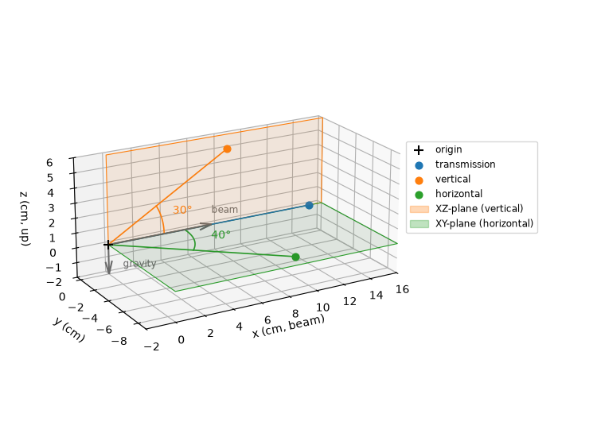

Note
Go to the end to download the full example code.
Different coordinate system¶
Define a laboratory reference frame with the X-axis along the beam and the Z-axis opposite to the direction of gravity. Three point detectors are positioned in this reference:
- transmission:
point detector in the beam
15 cm downstream from the sample (the origin of the reference frame)
- vertical:
point detector 10 cm from the sample
making an angle of 30 degrees with the beam w.r.t. the sample
positioned in the XZ-plane above the XY-plane
- horizontal:
point detector 12 cm from the sample
making an angle of 40 degrees with the beam w.r.t. the sample
positioned in the XY-plane below the XZ-plane
The coordinates of the point detectors in the laboratory reference frame are
transmission: \(X_\text{lab} = T_x(15) . X_d\)
vertical: \(X_\text{lab} = R_y(-30) . T_x(10) . X_d\)
horizontal: \(X_\text{lab} = R_x(90) . R_y(-40) . T_x(12) . X_d\)
where
\(T_x\), \(T_y\), \(T_z\): active transformation matrices for translation along the X, Y and Z axes
\(R_x\), \(R_y\), \(R_z\): active transformation matrices for rotation around the X, Y and Z axes
\(X_d\) is a coordinate in the detector reference frame
Note that as these are point detectors, we only have one coordinate \(X_d=[0,0,0,1]^T\).
The laboratory reference frame can be described in three ways:
The reference frame is documented by axes without a transformation_type.
Such an axis does not transform anything, it only records a direction, so its
value is never used. Here they record that the frame in which all these vectors
are given has its X-axis along the beam and its Z-axis opposite to gravity.
entry:NXentry
instrument:NXinstrument
vertical:NXdetector
depends_on=position/distance
position:NXtransformations
distance=10 # move away from the sample
@depends_on=polar
@transformation_type=translation
@units=cm
@vector=[1 0 0]
polar=30 # tilt above the horizontal plane
@depends_on=azimuth
@transformation_type=rotation
@units=degrees
@vector=[0 -1 0]
azimuth=0 # stay in the vertical plane
@depends_on=/entry/lab/beam
@transformation_type=rotation
@units=degrees
@vector=[-1 0 0]
horizontal:NXdetector
depends_on=position/distance
position:NXtransformations
distance=12 # move away from the sample
@depends_on=polar
@transformation_type=translation
@units=cm
@vector=[1 0 0]
polar=40 # tilt above the horizontal plane
@depends_on=azimuth
@transformation_type=rotation
@units=degrees
@vector=[0 -1 0]
azimuth=-90 # rotate to the horizontal plane
@depends_on=/entry/lab/beam
@transformation_type=rotation
@units=degrees
@vector=[-1 0 0]
transmission:NXdetector
depends_on=position/distance
position:NXtransformations
distance=15 # move downstream from the sample
@depends_on=/entry/lab/beam
@transformation_type=translation
@units=cm
@vector=[1 0 0]
lab:NXtransformations
beam=NaN # value is never used
@depends_on=gravity
@vector=[1 0 0] # X-axis points in the beam direction
gravity=NaN # value is never used
@depends_on=. # end of the chain
@vector=[0 0 -1] # Z-axis points up
The reference frame is defined as a change of basis with respect to the default
NeXus coordinate system. The basis vectors x,
y and z are the columns of the change-of-basis matrix \(A\) which
converts laboratory coordinates to NeXus coordinates
The axes in the detector chains remain active transformations, they move the detectors. The change of basis is the one passive step: it moves nothing, it re-expresses the result of the chain in the default frame. Unlike the direction axes of the first tab, it makes the laboratory frame computable rather than merely documented.
entry:NXentry
instrument:NXinstrument
vertical:NXdetector
depends_on=position/distance
position:NXtransformations
distance=10 # move away from the sample
@depends_on=polar
@transformation_type=translation
@units=cm
@vector=[1 0 0]
polar=30 # tilt above the horizontal plane
@depends_on=azimuth
@transformation_type=rotation
@units=degrees
@vector=[0 -1 0]
azimuth=0 # stay in the vertical plane
@depends_on=/entry/lab
@transformation_type=rotation
@units=degrees
@vector=[-1 0 0]
horizontal:NXdetector
depends_on=position/distance
position:NXtransformations
distance=12 # move away from the sample
@depends_on=polar
@transformation_type=translation
@units=cm
@vector=[1 0 0]
polar=40 # tilt above the horizontal plane
@depends_on=azimuth
@transformation_type=rotation
@units=degrees
@vector=[0 -1 0]
azimuth=-90 # rotate to the horizontal plane
@depends_on=/entry/lab
@transformation_type=rotation
@units=degrees
@vector=[-1 0 0]
transmission:NXdetector
depends_on=position/distance
position:NXtransformations
distance=15 # move downstream from the sample
@depends_on=/entry/lab
@transformation_type=translation
@units=cm
@vector=[1 0 0]
lab:NXcoordinate_system
x=[0 0 1] # X-axis points in the beam direction
x_direction="direction of the primary beam"
y=[1 0 0]
z=[0 1 0] # Z-axis points up
z_direction="opposite to gravity"
depends_on=. # basis vectors given in the NeXus coordinate system
The change of basis of the previous tab can also be expressed as an active
rotation in the NeXus coordinate system, since \(A\) is a rotation matrix: a
rotation of -120 degrees around [1 1 1]. It rotates the X, Y and Z axes onto the laboratory
axes, so the chains end in the NeXus coordinate system as well. The detector
chains are those of the first tab, depending on /entry/lab/rotation instead
of /entry/lab/beam.
entry:NXentry
lab:NXtransformations
rotation=-120 # rotate the axes onto the laboratory axes
@depends_on=. # end of the chain
@transformation_type=rotation
@units=degrees
@vector=[1 1 1]
The same rotation can be split into rotations around the X, Y and Z axes, for example \(A = R_y(-90) . R_x(-90)\).

# Transformations
import numpy as np
def rotation(vector: list, angle: float) -> np.ndarray:
"""Active 4x4 rotation matrix around ``vector`` over ``angle`` degrees."""
direction = np.asarray(vector, float)
direction = direction / np.linalg.norm(direction)
radians = np.deg2rad(angle)
cosine, sine = np.cos(radians), np.sin(radians)
cross = np.array(
[
[0, -direction[2], direction[1]],
[direction[2], 0, -direction[0]],
[-direction[1], direction[0], 0],
]
)
matrix = np.eye(4)
matrix[:3, :3] = (
np.eye(3) * cosine
+ sine * cross
+ (1 - cosine) * np.outer(direction, direction)
)
return matrix
def translation(vector: list, distance: float) -> np.ndarray:
"""Active 4x4 translation matrix along ``vector`` over ``distance``."""
direction = np.asarray(vector, float)
matrix = np.eye(4)
matrix[:3, 3] = direction / np.linalg.norm(direction) * distance
return matrix
def to_lab(matrix: np.ndarray, points: np.ndarray) -> np.ndarray:
"""Transform the Nx3 ``points`` with the 4x4 ``matrix``."""
homogeneous = np.column_stack([points, np.ones(len(points))])
return (matrix @ homogeneous.T).T[:, :3]
def arc(axis: list, angle: float, start: np.ndarray, steps: int = 60) -> np.ndarray:
"""Arc of ``angle`` degrees around ``axis``, starting at ``start``."""
direction = np.asarray(axis, float)
direction = direction / np.linalg.norm(direction)
begin = np.append(np.asarray(start, float), 1.0)
return np.array(
[
(rotation(direction, value) @ begin)[:3]
for value in np.linspace(0.0, angle, steps)
]
)
ORIGIN = np.zeros((1, 3))
# The first transformation of the chain is applied first
transmission_distance = translation([1, 0, 0], 15)
vertical_distance = translation([1, 0, 0], 10)
vertical_polar = rotation([0, -1, 0], 30)
vertical_azimuth = rotation([-1, 0, 0], 0)
horizontal_distance = translation([1, 0, 0], 12)
horizontal_polar = rotation([0, -1, 0], 40)
horizontal_azimuth = rotation([-1, 0, 0], -90)
# The detector positions are computed in the laboratory frame, which all tabs share.
# Check that the change-of-basis matrix of the NXcoordinate_system tab equals the
# rotation of the NXtransformations (rotation) tab.
change_of_basis = np.array([[0, 1, 0], [0, 0, 1], [1, 0, 0]])
assert np.allclose(rotation([1, 1, 1], -120)[:3, :3], change_of_basis)
assert np.allclose(
(rotation([0, 1, 0], -90) @ rotation([1, 0, 0], -90))[:3, :3], change_of_basis
)
detectors = {
"transmission": transmission_distance,
"vertical": vertical_azimuth @ vertical_polar @ vertical_distance,
"horizontal": horizontal_azimuth @ horizontal_polar @ horizontal_distance,
}
# Plot
import matplotlib.pyplot as plt # noqa E402
from matplotlib.patches import Patch # noqa E402
BEAM = np.array([1.0, 0.0, 0.0])
COLORS = {
"transmission": "tab:blue",
"vertical": "tab:orange",
"horizontal": "tab:green",
}
positions = {name: to_lab(matrix, ORIGIN)[0] for name, matrix in detectors.items()}
xmin, xmax, ymin, zmin, zmax = -2.0, 16.0, -9.0, -2.0, 6.0
fig = plt.figure(figsize=(7.5, 5.5))
ax = fig.add_subplot(projection="3d")
ax.view_init(elev=20, azim=-120)
# The vertical detector lies in the XZ-plane, the horizontal detector in the XY-plane
edge = np.array([[0.0, xmax], [0.0, xmax]])
zeros = np.zeros((2, 2))
ax.plot_surface(
edge, zeros, np.array([[0.0, 0.0], [zmax, zmax]]), color="tab:orange", alpha=0.1
)
ax.plot_surface(
edge, np.array([[0.0, 0.0], [ymin, ymin]]), zeros, color="tab:green", alpha=0.1
)
ax.plot(
[0, xmax, xmax, 0, 0],
[0] * 5,
[0, 0, zmax, zmax, 0],
color="tab:orange",
linewidth=0.8,
)
ax.plot(
[0, xmax, xmax, 0, 0],
[0, 0, ymin, ymin, 0],
[0] * 5,
color="tab:green",
linewidth=0.8,
)
# The direction axes that fix the reference frame. The arrows differ a lot in length,
# so the head is sized in data units to keep both heads equally visible.
head_length = 0.9
for name, vector, nudge in [
("beam", [positions["transmission"][0] / 2, 0, 0], [0, 0, 0.8]),
("gravity", [0, 0, zmin], [1.0, 0, 0.3]),
]:
ax.quiver(
0,
0,
0,
*vector,
color="dimgray",
arrow_length_ratio=head_length / np.linalg.norm(vector),
)
ax.text(*np.add(vector, nudge), name, color="dimgray", fontsize="small")
ax.scatter(0, 0, 0, color="black", marker="+", s=80, label="origin")
# Each detector angle is drawn as an arc from the beam towards the detector
for (name, position), radius in zip(positions.items(), [0.0, 4.0, 5.5]):
ax.plot(*zip([0, 0, 0], position), color=COLORS[name], linewidth=1.2)
ax.scatter(*position, color=COLORS[name], s=40, label=name)
if not radius:
continue
direction = position / np.linalg.norm(position)
angle = np.degrees(np.arccos(np.clip(BEAM @ direction, -1.0, 1.0)))
points = arc(np.cross(BEAM, direction), angle, BEAM * radius)
ax.plot(*points.T, color=COLORS[name], linewidth=1.2)
ax.text(
*points[len(points) // 2] * 1.2,
f"{angle:.0f}\N{DEGREE SIGN}",
color=COLORS[name],
)
ax.set(xlabel="x (cm, beam)", ylabel="y (cm)", zlabel="z (cm, up)")
ax.set_xlim(xmin, xmax)
ax.set_ylim(ymin, 0.5)
ax.set_yticks(np.arange(-8, 1, 2))
ax.set_zlim(zmin, zmax)
ax.set_aspect("equal")
handles, _ = ax.get_legend_handles_labels()
handles += [
Patch(color="tab:orange", alpha=0.3, label="XZ-plane (vertical)"),
Patch(color="tab:green", alpha=0.3, label="XY-plane (horizontal)"),
]
ax.legend(
handles=handles, loc="center left", bbox_to_anchor=(1.0, 0.6), fontsize="small"
)
fig.subplots_adjust(left=0.0, right=0.78)
plt.show()
Total running time of the script: (0 minutes 0.128 seconds)